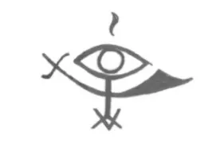

Ritual Grimoire
Apoxias Spirit House
Tradition
Solitary or Group
Form
Setting
Category
Difficulty
Correspondences3
Materials4
Moon Phase1
Symbols1
A new moon crossroads ritual to create a spirit house for Apoxias, a grimoire guardian spirit, using a green bottle filled with dirt from nine locations and protective botanicals, sealed and empowered through invocation to Hekate.
Quantities
- 1 green glass bottle
- Dirt collected from 9 different locations (crossroads, cemetery, church, courthouse, bank, your home, place of business, place of learning, place of healing)
- Small amounts of oak leaves or bark
- Small amounts of pine needles
- Small amounts of blackthorn (sloe)
- Dandelion (root, leaf, or flower)
- Poppy seeds or dried flowers
- Black mustard seeds
- Hair from a black dog
- Small piece of myrrh resin
- Dried mugwort
- Dried mullein
- 3-9 razor blades
- Small bells
- Small mirror shards
- Length of chain
- Black or dark green candle
- Matches or lighter
Directions
- This working must be performed at a three-way crossroads during the new moon, ideally at midnight or during the dark hours.
- Prepare the spirit house by layering the nine different soil samples into the green bottle, speaking the purpose of each location as you add it.
- Between the dirt layers, add pinches of oak, pine, and blackthorn for strength and protection.
- Add the dandelion for spirit communication, poppy for dreams and visions, and black mustard seeds for protection and power.
- Include the hair from a black dog to invoke Hekate's favor and strengthen the guardian connection.
- Add small pieces of myrrh resin for purification and sacred space, mugwort for psychic protection and dream work, and mullein for courage and protection against nightmares and malevolent spirits.
- Carefully place the razor blades into the bottle to cut away harmful influences.
- Add the small bells to alert you to spiritual activity and the mirror shards to reflect back any negativity or unwanted attention.
- Thread the chain through or around the bottle's neck, speaking words of binding and protection.
- Seal the bottle tightly.
- Stand at the center of the crossroads holding the bottle and the black candle.
- Light the candle and speak this invocation to Hekate: "Hekate, Queen of the Crossroads, Guardian of the Threshold, Keeper of Keys, I call upon you at this sacred meeting of three ways. Witness this working and bless this spirit house I create. May Apoxias, guardian of hidden knowledge and protector of sacred texts, find dwelling here. By oak and pine and blackthorn's spine, by mustard seed and poppy's dream, by the hair of your sacred hound and the chain that binds, I create this vessel of protection. Mirror to reflect, blade to sever, bell to announce, herb to guard. Hekate Trivia, bless this working. Let this house stand as guardian over my grimoire, my practice, and my sacred space. As I will it, so shall it be." Allow the candle to burn for several minutes at the crossroads, then extinguish it.
- Take the spirit house home and place it in a location where it can watch over your magickal workspace, grimoire, or library.
- The spirit house should remain undisturbed.
- If you move it, speak to Apoxias and explain the relocation.
- Leave small offerings of incense, wine, or honey near the bottle periodically to maintain the relationship with the guardian spirit.
